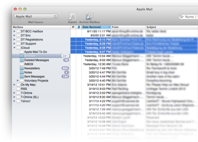

|
|
|
Archiving email |
|
The Mail import function lets you conveniently import email messages or archive complete mailboxes from your preferred email applications to your DEVONthink Pro Office database.  DEVONthink Pro Office currently supports the following email applications:
The imported email messages are saved in their original file format and are displayed using QuickLook. MailTags metadata is preserved in the comments. In addition, the "read" and "flagged" status of email messages are transferred from Microsoft Entourage and Microsoft Outlook independently from your settings in Preferences, Email tab.
Preparations DEVONthink Pro Office communicates with your email application using either AppleScript or, if you are using Apple Mail, through a special plugin that implements a direct link between Mail and DEVONthink Pro Office. If the plugin is not automatically installed click here or select DEVONthink Pro Office > Install Add-Ons to install it. In addition to speeding up the transfer of emails from Apple Mail to DEVONthink Pro Office, the plugin inserts new menu commands into Mail's menus that allow you to directly archive selected messages or mailboxes to your DEVONthink Pro Office database. When accessing a supported mail application via AppleScript, automatic fetching of new mail is disabled. This does not happen when you use Apple Mail with the DEVONthink Pro Office plugin installed.
The Import Email window Open the Import Email window from File > Import > Email menu. It is designed to match the main window of most major email applications, with a mailbox list to the left and a list of messages contained in a selected mailbox to the right. To access the mailboxes and messages stored in your email application, select your email application in the toolbar's Source pop-up menu. DEVONthink Pro Office automatically selects your default email application. (DEVONthink Pro Office will only list applications installed on your Mac that it directly supports.) If you are using an unsupported mail application that uses Unix mailboxes, like Thunderbird, choose Unix mailbox and locate the mailbox file you want to use. You can also drop ".mbx" or ".mbox" files onto DEVONthink Pro Office's application icon to import them, thus bypassing this window. DEVONthink Pro Office then immediately launches your email application and shows the list of available mailboxes. Select any mailbox to show its content, and use the triangles in front of the mailbox icon to expand the mailbox and see its sub-mailboxes. To import a complete mailbox, including messages, select the mailbox in the folder list, and click the Archive Mailbox icon in the toolbar. This imports the complete mailbox including all sub-mailboxes and recreates the mailbox hierarchy by using groups in your DEVONthink Pro Office database. To import one or multiple messages, select them in the list of messages and click the Import icon in the toolbar. The imported messages are placed into the default destination.
Import vs. Archive Mailbox: If you want to archive whole mailboxes, including all sub-mailboxes, use the Archive Mailbox icon in the Import Mail window's toolbar. Select the mailbox that you want to archive and click the Archive Mailbox icon in the toolbar. DEVONthink Pro Office imports all new (!) messages of the selected mailbox and all sub-mailboxes to the Email group of the current database. This Email group is shared by all mailboxes archived.
Filter: Change any filter settings on the right-hand side of the window to narrow down the list of messages. The following filters are available:
Importing from Apple Mail If you are using Apple Mail, you're one step ahead of those using other mail applications. This is because the plugin that DEVONthink Pro Office installs for Apple Mail not only directly links DEVONthink Pro Office to the application, but also inserts two very convenient menu commands. These commands allow you to directly import selected messages, or complete mailboxes from Apple Mail to DEVONthink Pro Office. Alternatively you can drag messages directly from Apple Mail to DEVONthink Pro Office.
To import complete mailboxes from Apple Mail to DEVONthink Pro Office, select one or more mailboxes in Apple Mail and choose Mailbox > Add to DEVONthink Pro Office. To import one or more selected messages, choose Message > Add to DEVONthink Pro Office. The imported messages are stored in the inbox.
Replying to imported messages To reply to an archived email message, right-click it and choose Send Reply . Choose Send by Email to email a selected document.
Toolbar The toolbar of the Import Mail window contains the following commands:
|